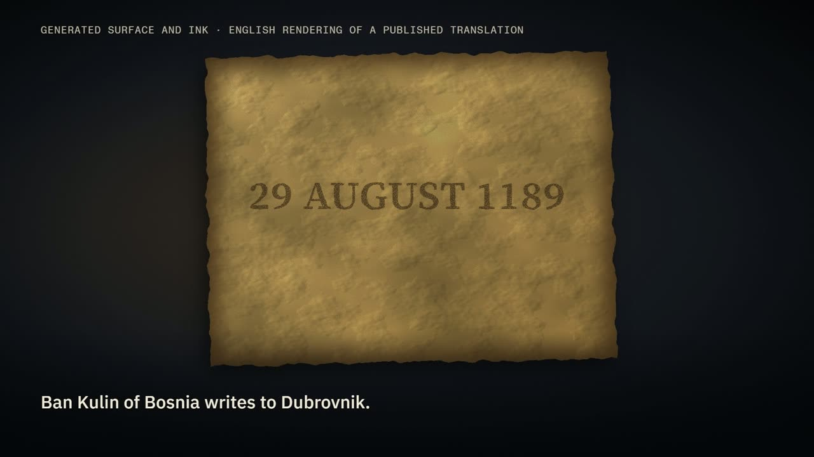
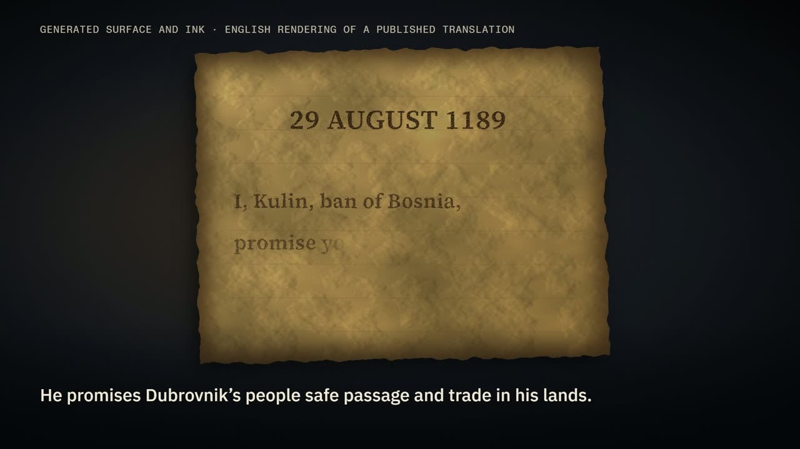
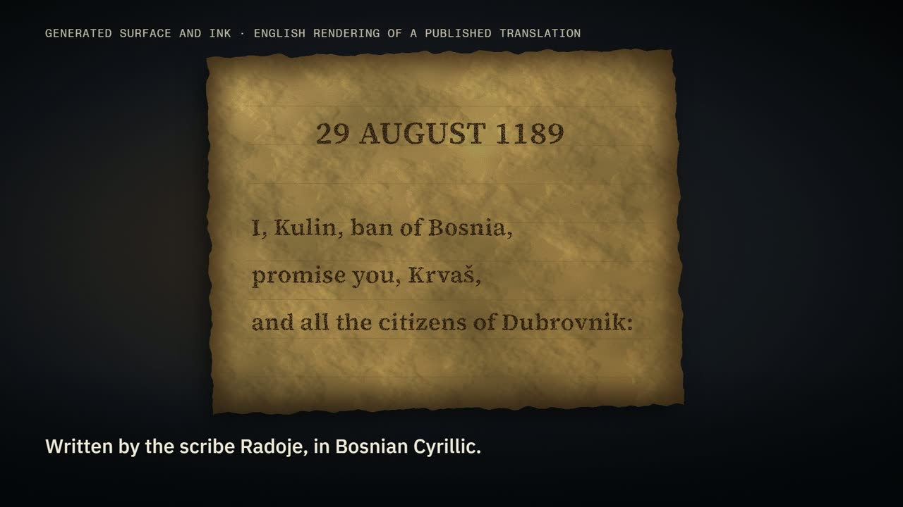
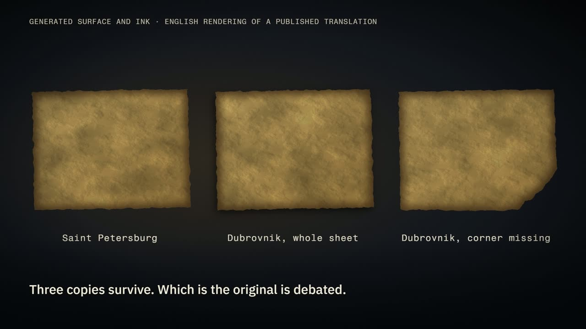
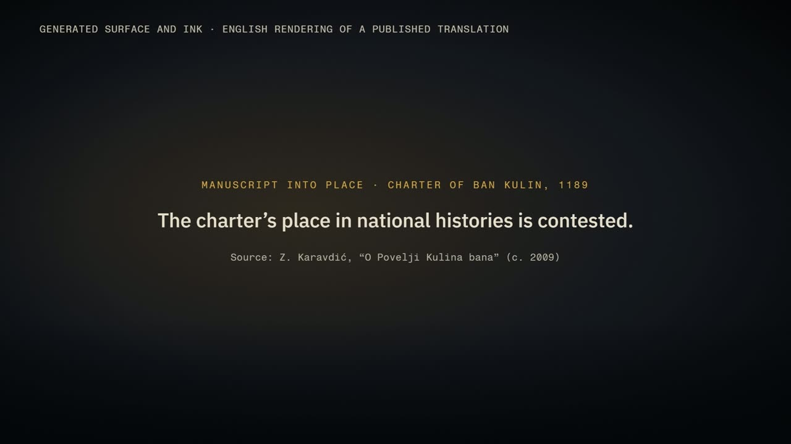
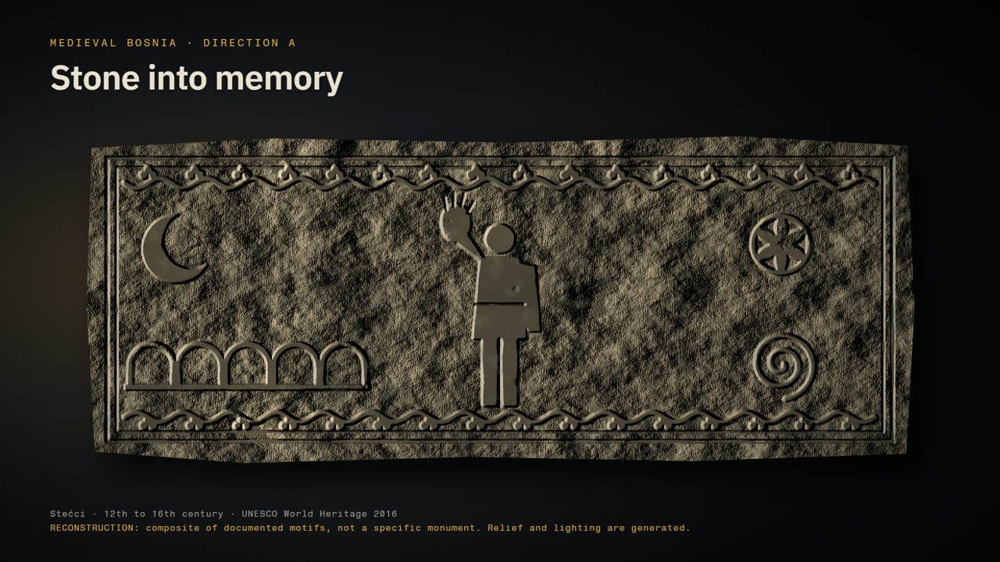
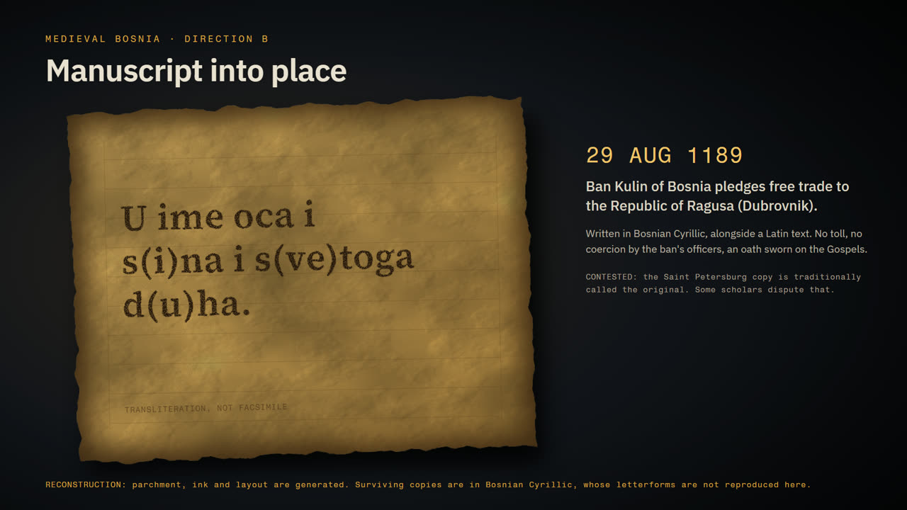
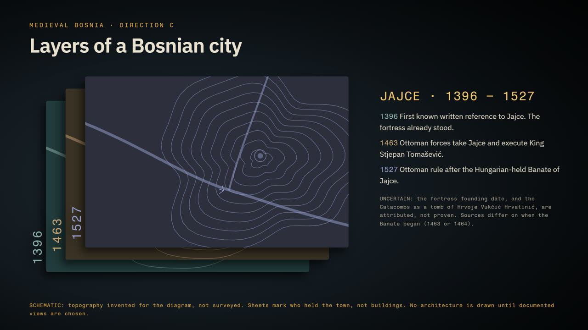

15-second film · landscape · English
Manuscript into place
On 29 August 1189, Ban Kulin of Bosnia put a promise to the people of Dubrovnik in writing. Three copies of the charter survive, and which one is the original is debated. This film shows that, and only that, with every claim graded and every reconstruction labelled.
Watch
15.000 s1920×108030 fpsstereo sound Captions are burned in. A tag on screen says the surface and ink are generated and the lines are an English rendering of a published translation.
Text version of the film
0.5 to 2.2 s. A generated aged sheet. The date "29 AUGUST 1189" is written in ink. Caption: "Ban Kulin of Bosnia writes to Dubrovnik."
4.0 to 10.0 s. Three lines are inked: "I, Kulin, ban of Bosnia, / promise you, Krvaš, / and all the citizens of Dubrovnik:". Captions: "He promises Dubrovnik's people safe passage and trade in his lands." then "Written by the scribe Radoje, in Bosnian Cyrillic."
10.0 to 12.5 s. The ink fades and the sheet slides apart into three labelled sheets: Saint Petersburg, Dubrovnik (whole sheet), Dubrovnik (corner missing). Caption: "Three copies survive. Which is the original is debated."
12.8 to 15.0 s. End card: "The charter's place in national histories is contested." Source: Z. Karavdić, "O Povelji Kulina bana" (c. 2009).
Sound: synthesized room tone, quill-like ink scratches, paper rustle, one soft low thud when the sheets separate. Not claimed to be historical or authentic.
Key frames





What the film claims, and how sure we are
Every claim on screen comes from an approved fact sheet. Four grades:
Two or more independent sources, or the document's own colophon as a scholar renders it.
One source says it, and the source is named.
Scholars or public narratives disagree.
Not confirmed, so the film does not say it.
| Claim | Grade | Basis and film rule |
|---|---|---|
| Issued 29 August 1189 | VERIFIED | The colophon, as Karavdić renders it, gives day, month and year and names the feast. Four secondary sources agree. |
| Issuer: Kulin, ban of Bosnia, c. 1180 to 1204 | VERIFIED | The text opens with the ban naming himself. One municipal source ends his reign in 1203, so the dates are approximate. |
| Addressed to knez Krvaš and the citizens of Dubrovnik | VERIFIED | Sources translate Krvaš's title two ways, so the film leaves it out. |
| Content: friendship, safe travel and trade, no violence from his officials, help while they stay, an oath on the Gospel | VERIFIED | Karavdić's full modern translation. |
| "No toll" | CONTESTED WORDING | One source says toll-free. Karavdić renders the clause differently. The film avoids the phrase. |
| Scribe: Radoje, "the ban's scribe" | VERIFIED | Colophon as rendered by Karavdić, plus one secondary source. |
| Slavic text in Bosnian Cyrillic, plus a Latin text | VERIFIED | The film does not draw or imitate the letterforms. |
| Three copies: Saint Petersburg, and two in Dubrovnik | VERIFIED | Karavdić (copies A, B, C), the Zemaljski muzej BiH, and two news sources. |
| Which copy is the original | CONTESTED | The film says only that it is debated. |
| What the copies are written on | UNVERIFIED | No material is named. The generated sheet is not a claim. |
| One Dubrovnik copy is on a whole sheet, the other on a damaged sheet missing a lower corner | ATTRIBUTED | Karavdić's figure captions and footnote, checked against the reproduction in her PDF. The shape of the loss is not known. |
| Kulin's Bosnia is not modern Bosnia and Herzegovina | ATTRIBUTED | Wikipedia's account of the banate. The film shows no map and no borders. |
What the film leaves out on purpose
- Superlatives. "Oldest," "first international treaty" and "birth certificate" are interpretations. The film says "from 1189."
- Ownership. Karavdić notes the charter has been used politically since the 1990s. The film names no nation or language as its owner.
- A writing material. An early build looked like parchment. That implied something nobody had verified, and review caught it.
Three directions were proposed. One was built.
Before animating, three visual directions were drafted and labelled. Direction B became the film.



How it was checked
- Fact sheet first. The wording rules were approved before any frame was animated.
- Independent review, two passes. A separate reviewer saw only the fact sheet, the video and extracted frames. It found three critical problems in the first build: an end card crediting a source that was only cited and not read, a torn edge the source did not describe, and disclaimers on screen for about one second. All three are fixed.
- Measured, not assumed. Duration, resolution, frame count, loudness, silence, black frames, and caption margins on real pixels.
Limits. No critical edition or facsimile was consulted. The audio was measured but not listened to by the build or the reviewer. The UNESCO page was unreachable, so no UNESCO figures are used. Reign dates and the banate's territory rest on Wikipedia.
Sources and documents
- Zenaida Karavdić, "O Povelji Kulina bana: Bez' v'sega zloga primysla," Sarajevo, c. 2009 (PDF). Main source.
- Wikipedia: Charter of Ban Kulin, Ban Kulin, Banate of Bosnia (secondary).
- Zemaljski muzej BiH: the charter.
- Edin Ramić, "Bosnia's First Known International Treaty from 1189," Uprava 10(1), 2019 (abstract).
- Marija Arnautović, RFE/RL, 28 August 2009; N1, 29 August 2024.
In the repository: fact sheet · storyboard · historical note · source code